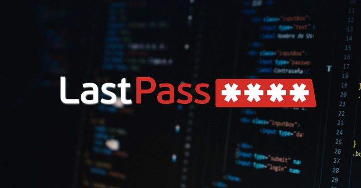

LastPass x a11y ▓▒░
Senior Product Designer @ GoTo - 2021

¬ Summary ▫
I had the chance to oversee an extensive accessibility overhaul at LastPass as the UX designer of a fast-reacting team. Together with a development team of five, we tackled a long list of accessibility violations and pushed the platform's a11y rating up by 14%. The update went live on the 10th Global Accessibility Awareness Day.
¬ Goal ▫▪
To help our sales team expand LastPass' clientele - especially in more regulated sectors like banking and insurance - we needed to improve the app's mediocre accessibility rating across the web/desktop app and browser extension producing a more than acceptable VPAT report.
¬ Outcome ▫▫
Over two months of intensive front-end refactoring, we successfully pushed the a11y rating from ~69% to ~83% - a huge win for the user base. In real-world terms, the app became fully usable with assistive technologies.
This included full keyboard navigation, fully valid ARIA announcements, and the ever-popular classic: "every button became a real button" change.
And the real bonus? An Axe test became part of the E2E testing suite after our project.
For my enthusiasm and pushing the dev team to its limits (sorry guys for being a pain in the ass!), I was promoted into GoTo's* Accessibility Champion program, where I joined other champions in advocating a11y standards across the organization.
* GoTo, formerly LogMeIn, was the parent company of LastPass at that time.
¬ Takeaway ▫▪▪
Just because something can be clicked doesn't mean it's a valid navigation element - and most assistive technology treats it that way. These "fake" buttons and links are either nonexistent to screen readers or reduced to plain text.
Always pay attention to using the appropriate element for every UI block in your website or app. Most compatibility issues are fully covered by following valid code schematics.
It's shocking how many people assume everyone has full sensory and fine-motor function, but in reality, accessibility issues affect more people than you'd expect. And a11y features aren't just about inclusivity; they also make your software more efficient for your power users.
¬ Further Reading ▫▪▫
LastPass wrote about the company-wide accessibility journey: